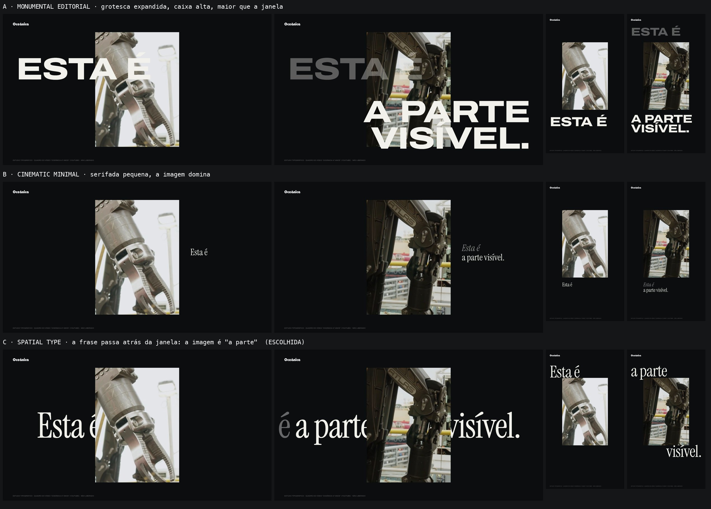
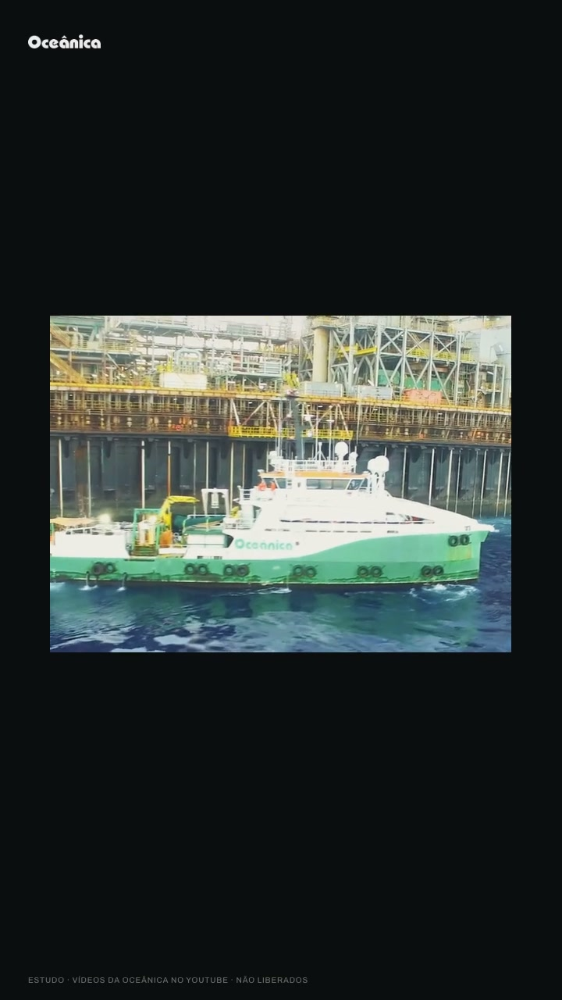
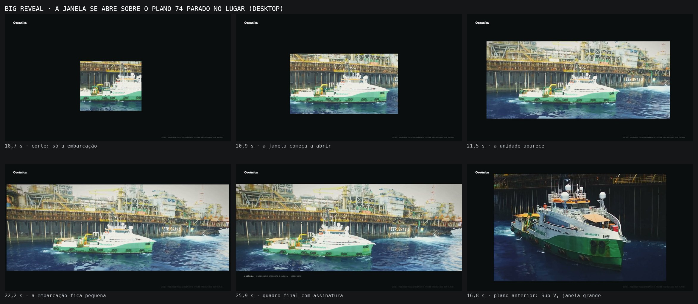
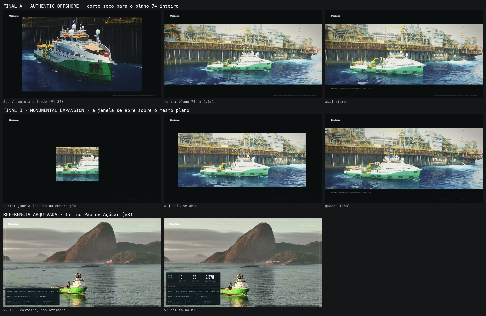
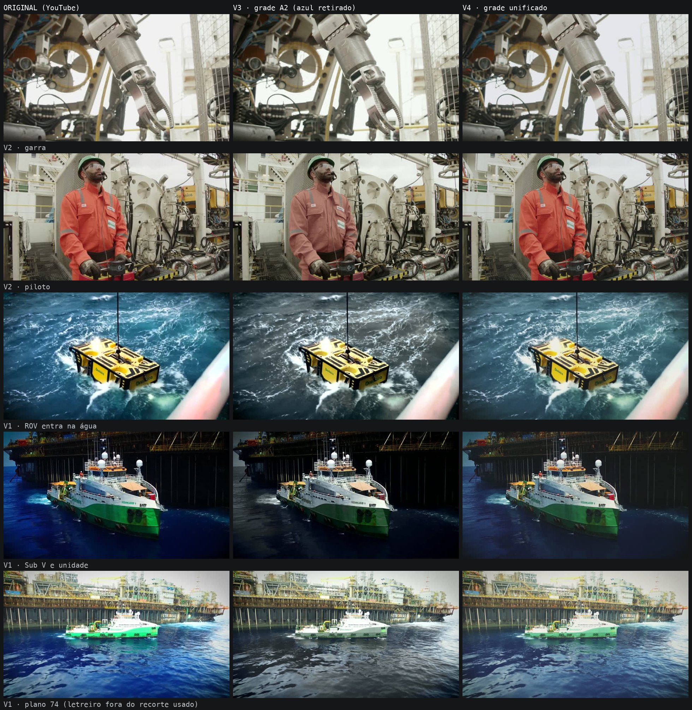
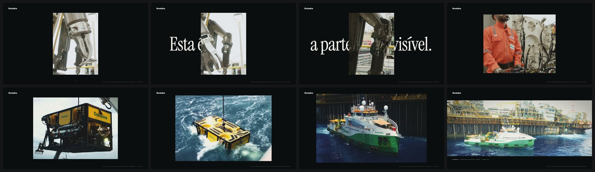
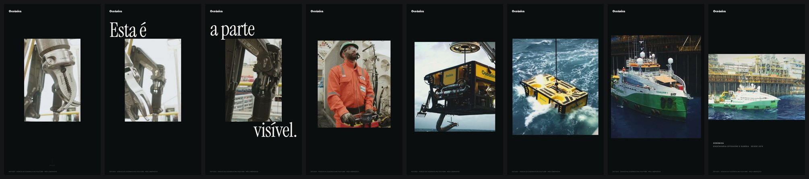

Esta é
a parte visível.
Hero V4 · Director's Cut. Cada plano real aparece por uma janela que cresce ao longo do filme, até se abrir sobre a operação offshore. Somente imagens dos dois vídeos da Oceânica no YouTube, não liberadas. Nenhuma imagem gerada.
Notas do diretor · Blueprint de scroll · v3 para comparar
Animatic V4 · desktop e mobile
26,2 s. Três movimentos: o detalhe, a pessoa e a máquina, a escala. Final B (Big Reveal).
Tipografia
A · monumental editorial, B · cinematic minimal, C · spatial type (escolhida): a frase passa atrás da janela e a imagem fica entre as palavras.

Big Reveal
Uma janela pequena mostra só a embarcação. Ela se abre sobre o mesmo plano, parado no lugar, e revela a unidade de produção. No desktop a imagem não é ampliada nem deslocada.


Os dois finais
Recomendado: Final B. O Final A é o corte seco, a alternativa sem recurso gráfico. O Pão de Açúcar fica arquivado como referência. O plano 74 mostra o nome do cliente no costado: depende de autorização.

Cor
Original, grade da v3 e grade da V4. O vídeo institucional perde o azul elétrico e o verde neon; o vídeo dos 47 anos perde parte do dourado. Uma curva comum, sem vinheta e sem nitidez adicional.

Sequência


O que ainda falta para virar peça final
- Os brutos dos planos usados, sem letreiro e sem cor de fábrica.
- Autorização para o plano 74 (nome do cliente no costado) ou outro plano aéreo aberto em campo.
- Um macro de garra com fundo escuro, para o primeiro quadro.
- O manual de marca, para a tipografia final.